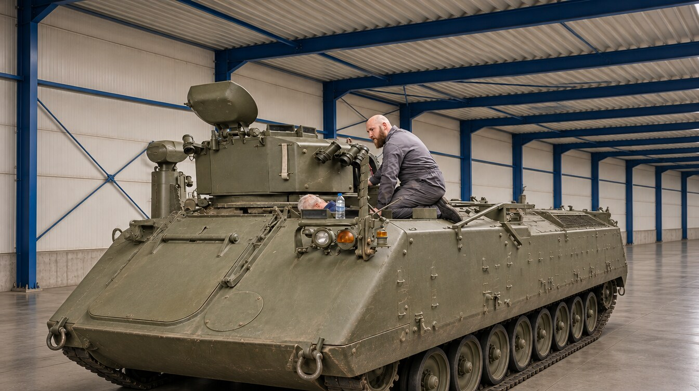

AMS / Training
Core service 03
Technical Training
Capability that stays with your people. Training that builds operational resilience and reduces dependency on outside support.
What we do
Knowledge that reduces dependency
We work with major defence manufacturers to build training for military personnel, maintainers, operators and drivers on multi-domain land systems. Every programme is tailored to its users and adapted for remote, volatile and demanding environments.
From initial equipment training through to advanced MRO skills, we transfer knowledge that reduces dependency and increases readiness.
Learning is hands-on, using simulation, equipment demonstrations and immersive environments. Our instructors bring real-world sustainment experience. Modules cover technical competence, safety and regulatory compliance.
- 20,000+Local nationals trained
- 300+Training contracts
- 30+Countries our instructors come from
- 4,000+Employees trained and mentored on a single programme (NMS-GVS)
The problem we solve
Platforms are only as effective as the people who operate and maintain them.
Without effective training, capability degrades even when platforms are serviceable.
- 01New equipment requires new skills.
- 02Personnel turnover erodes organisational knowledge.
- 03Maintenance quality depends on technician competence.
- 04Dependency on external support is expensive and fragile.
What we deliver
Training for every stage of a platform's life
| Programme | What it builds |
|---|---|
| New equipment training (OPNET, FLMNET) | Operator, driver maintenance and recovery skills as platforms are fielded, plus vehicle characteristics, risk assessment and preventive maintenance checks. |
| Field-level sustainment (Levels 1–2) | Troubleshooting, repair and monitoring of auxiliary systems, so units can keep platforms available themselves. |
| Depot-level sustainment (Levels 3–4) | Battle damage assessment and repair, major repair and overhaul, rebuild, modification and integration, testing and calibration. |
| Capacity building | Training and mentoring for maintenance, supply chain and quality teams that build lasting local self-sufficiency. |
| Design authority | Deep platform knowledge passed on alongside overhaul. |
How we protect readiness
Our services work independently or together as a system, giving consistency, control and continuity across the in-service lifecycle.
Next step
Build capability that lasts
Tell us about your platforms and your people. We'll design a programme that leaves them self-sufficient.
Remove complexity. Protect readiness.